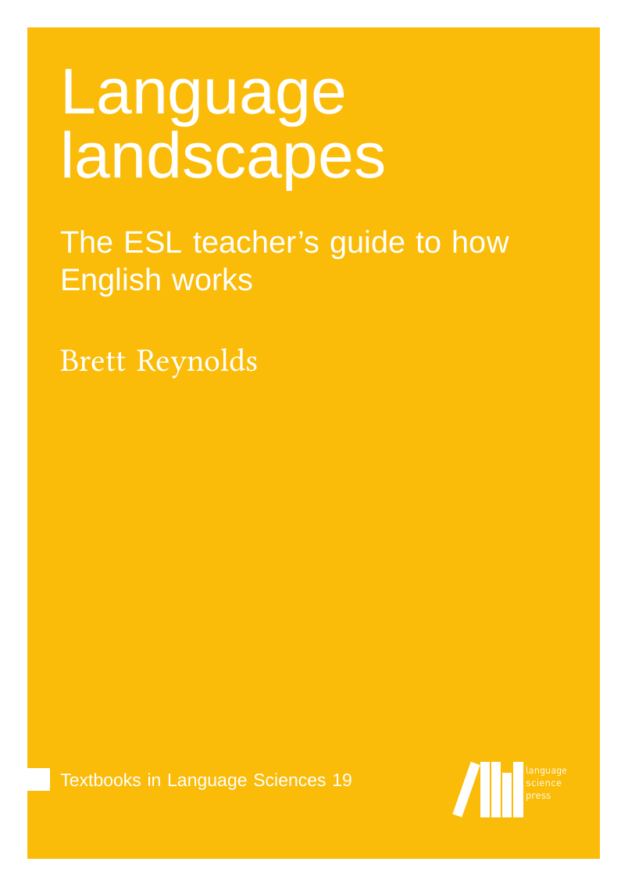

The ESL teacher's guide to how English works
Textbooks in Language Sciences 19, Language Science Press, 2026. Open access, CC BY 4.0.

Language isn't a list to memorize; it's a landscape to explore.
A good field naturalist doesn't just name things but watches how they behave, where they cluster, why they vary. This book asks you to read English the same way: attending to what speakers actually do, not what rule books say they should. The framework is The Cambridge Grammar of the English Language, simplified for accessibility but never dumbed down.
The chapters move from sounds and words through phrases, clauses, and discourse, with clear examples from English set alongside snapshots from other languages. Each chapter models the same move: observe a pattern, test it against evidence, notice where it breaks down, and ask what the breakdown tells you. By the end, you'll have a working grammar that earns its claims, one you can use to evaluate textbooks, explain why a learner's sentence doesn't quite work, and defend your explanations when challenged.
Whether you're in pre-service training or already in the classroom, the payoff is the same: you stop relying on rules you can't justify and start seeing the system for yourself.
Download the PDF (free) · Publisher page · DOI · LaTeX source on GitHub
ISBN (PDF) 978-3-96110-585-4 · ISBN (softcover) 978-3-98554-202-4
The softcover is print-on-demand and greyscale; the colour figures are in the free PDF.
The book is CC BY 4.0, so programs can assign it free, excerpt it, reorder it, and adapt it, including translations now underway. Using it in a course, or thinking about it? I'd like to hear: brettrey@gmail.com.